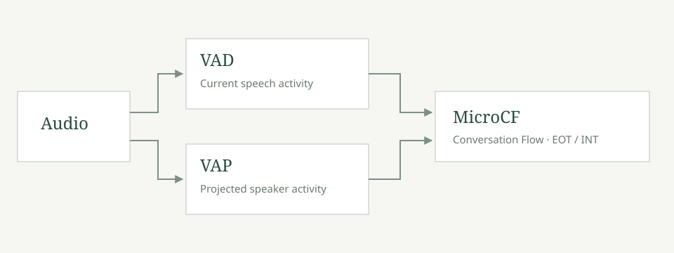

CONVERSATION FLOW
MicroCF
Understanding the timing of conversation.
MicroCF addresses two essential moments in spoken interaction: when a speaker finishes a turn, and when another speaker takes the floor. It brings together voice activity detection (VAD) and voice activity projection (VAP) for end-of-turn (EOT) and interruption (INT) detection.
MicroCF builds on FunASR and Voice Activity Projection (VAP), with further improvements and optimizations for conversational turn-taking.
Voice Activity Detection
VAD identifies the presence of speech in an audio stream. It examines acoustic information over short segments and estimates whether each segment contains speech or non-speech activity. These estimates can be used to describe speech regions and pauses.
VAD provides a basic observation about the sound currently arriving. A pause can occur inside an unfinished utterance as well as between turns, so speech activity alone does not establish whether a conversational turn has ended.
Voice Activity Projection
VAP models future voice activity from the audio observed so far. In a two-speaker setting, it uses the conversational audio context to estimate upcoming activity patterns for the participants.
Its output is predictive evidence about future speaking activity. Such evidence can inform turn-taking systems about likely continuation and speaker transitions. Predicting future activity uses past and present audio; it does not require access to future audio.

Conversation Flow
VAD and VAP describe complementary aspects of a conversation: current speech activity and projected speaker activity. MicroCF uses both to support the timing of conversational interaction.
End-of-turn detection identifies when a speaker has finished a turn. In a voice application, this event can help determine when to begin responding.
Interruption detection identifies when another participant takes the floor while someone is speaking. In a voice application, this event can help determine when to yield.
Decision policies
MicroCF is a modified version of a VAD–VAP conversation-flow system, adapted for joint end-of-turn and interruption detection. Each original speaker is evaluated as the target speaker, with the other channel providing conversational context. EOT and INT share observations but maintain separate temporal states and operating points. The evaluated changes are in the streaming execution and decision policies; the underlying checkpoints are retained.
Turn activation. For each target speaker, activation evidence requires VAD speech activity together with the target speaker's VAP near-term activity probability and VAP activity estimate exceeding their activation thresholds. Evidence must persist for a minimum duration before a candidate turn becomes active. A break in the evidence before confirmation cancels the candidate.
End-of-turn. Once a turn is active, release evidence requires VAD inactivity, a near-term activity probability below its release threshold, and a VAP activity estimate below its activity threshold. A release candidate becomes a confirmed EOT only when these conditions remain satisfied for the release-confirmation duration. If the conditions cease to hold, the release timer resets and the turn remains active. EOT is emitted at confirmation, not at the earlier start of the release interval.
Interruption. The INT policy tracks continuous VAD-active duration. It requests an interruption when speech has persisted for the minimum interruption duration, near-term activity probability exceeds its threshold, and the target's turn is active or in its release-candidate state. An INT event is exported only on a transition from no interruption request to an interruption request. Persistent requests do not create an event on every frame. The INT policy maintains its own activation and release state; EOT settings do not overwrite it.
Timing and output. Policies are updated on a shared audio clock. Each timestamp includes all audio required for its decision. Streaming model history is preserved, and no future audio is used to produce an earlier event. Events outside a recording's duration are excluded. The event lists, rather than a subsequent confidence threshold, define the evaluated operating point.
Operating-point selection
Selection used TurnBench dev data and the official event-matching scorer. We evaluated event lists by recall, false-positive rate (FPR), and median detection latency (P50). The searched variables were turn-activation probability and activity thresholds, activation duration, release probability threshold, release-confirmation duration, and minimum speaking duration for interruption. EOT and INT were selected separately, with one fixed parameter set per task across all conversations.
EOT selection. An initial search of 147 settings was followed by an expanded grid of 3,840 settings, scored on a fixed 24-conversation tuning subset. The selected EOT point maximized tuning recall subject to tuning FPR at most 10% and P50 at most 900 ms; ties favored lower FPR, then lower P50. The selected setting was then evaluated on the remaining 14 dev conversations and on full dev. The 10% constraint applies to the tuning subset; full-dev FPR is 10.16%.
INT selection. The retained INT point was initially selected from 960 tuning-only settings by minimizing FPR among settings with recall at least 97% and P50 at most 900 ms. A later 2,160-setting dev search explored higher recall and lower FPR alternatives. We retained the earlier INT point as a development tradeoff: the higher-recall candidate added one true positive but 36 false-positive spans on full dev. This retention decision used dev results only.
Validation limits. The later search reused a 24/14 dev split. Earlier INT work also used a 13-conversation internal validation subset. Development results, including results on validation examples, had already been inspected during the broader development process. These subsets therefore are not claimed as a pristine held-out test, and the full-dev table includes tuning examples.
Test boundary. An earlier test inference run had completed before the expanded dev search. The final policy was chosen from dev results and fixed before regenerating test events from cached causal model observations. No hidden test annotations, test scores, or organizer scoring feedback were available or used for selection. There are no per-conversation parameter changes or manual edits to event lists.
Export verification. The final files cover 38 dev and 116 test conversations. New EOT event lists were checked against native sequential policy output for all 308 speaker channels; INT event lists were preserved from the validated earlier export. Both files passed the official schema, conversation-coverage, and event-time checks. The exported dev file was re-scored to verify the results below.
TurnBench development results
The measurements below cover all 38 TurnBench dev conversations, approximately 7.31 hours of audio. Dev data was used for operating-point selection; these are development results, not official held-out test scores.
| Task | Recall ↑ | False-positive rate ↓ | P50 latency ↓ |
|---|---|---|---|
| End-of-turn | 90.13% | 10.16% | 681.5 ms |
| Interruption | 98.56% | 7.05% | 771 ms |
Recall measures the proportion of positive events detected. False-positive rate measures activation within negative spans. P50 latency is the median detection delay for matched events, measured at the required audio horizon and excluding inference and transport overhead.
Future work: MacroCF
MacroCF is a planned autoregressive audio–text model for context-aware Conversation Flow, targeting one decision every 200 ms (5 Hz). The proposed interface supports EOT, INT, LTN, BC, and REJ tags, with optional <think> output.